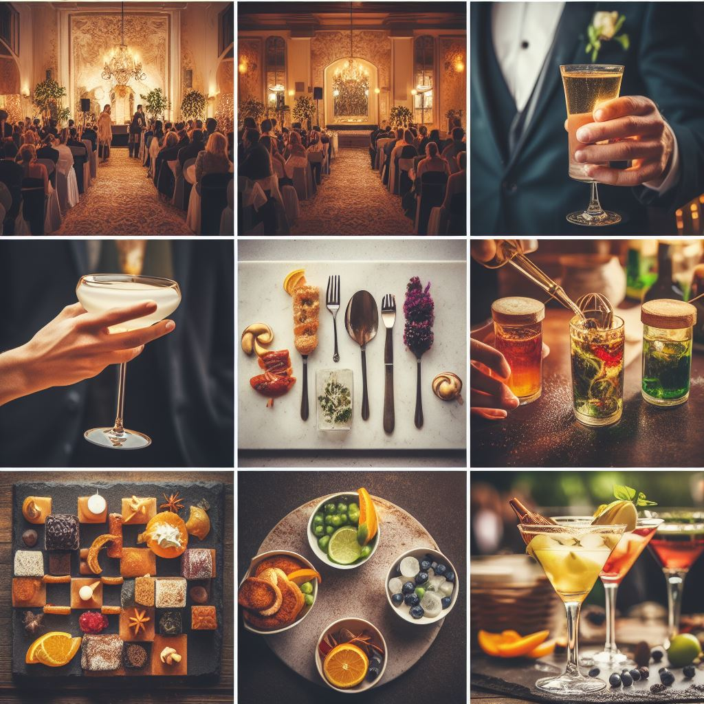
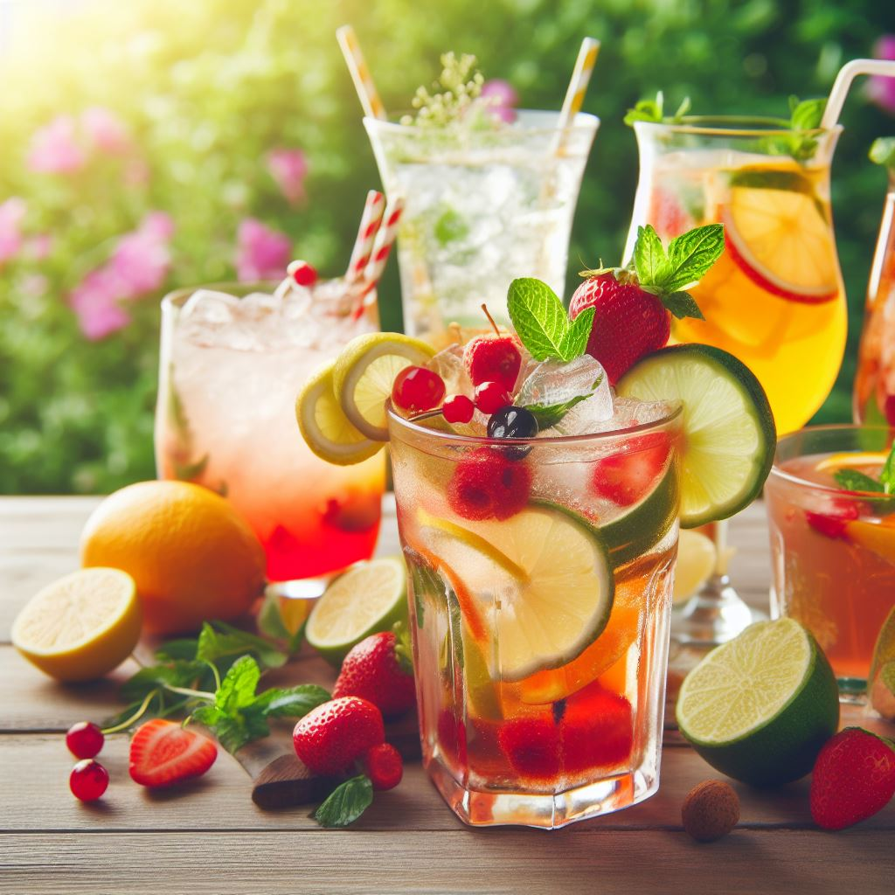

Cócteles de Recepción: La Primera Impresión Cuenta
Al dar la bienvenida a tus invitados en un evento, ya sea una boda, una fiesta en casa o una reunión de negocios, la primera impresión es fundamental.
La selección de cócteles para la recepción es una oportunidad perfecta para sorprender y deleitar a tus asistentes desde el momento en que cruzan el umbral.
Aquí te proporcionamos algunas ideas y consejos para crear la recepción perfecta con cócteles elegantes y refrescantes:
Cócteles a la Llegada: Elegancia y Sorpresa
Cóctel de Recepción Clásico: Considera ofrecer cócteles clásicos como el Martini, el Negroni o el Mojito.
Estas opciones atemporales impresionarán con su sofisticación y sabor.
Cócteles de Bienvenida Temáticos: Si tu evento tiene un tema específico, elige cócteles que se relacionen con él. Por ejemplo, en una boda de verano,
podrías ofrecer "Margaritas de Maracuyá" para un ambiente tropical.
Cócteles sin Alcohol Creativos: No olvides a aquellos que prefieren no beber alcohol. Ofrece cócteles sin alcohol con presentaciones impresionantes,
como un "Mojito Sin Alcohol" o un "Fresco de Frutas con Chispa".

Cócteles Refrescantes para Eventos al Aire Libre
Cuando planificas un evento al aire libre, como un picnic en el parque o una animada barbacoa en el jardín, los cócteles refrescantes son la elección perfecta.
Estas bebidas están diseñadas para combatir el calor y satisfacer la sed de tus invitados mientras disfrutan del aire libre. Aquí hay algunas opciones refrescantes y consejos para garantizar que tus cócteles sean un éxito en eventos al aire libre:
Cócteles Refrescantes a Considerar
Mojito: El Mojito es una elección clásica para eventos al aire libre. La mezcla de menta fresca, limón, azúcar y ron blanco, junto con hielo picado,
lo convierte en una bebida refrescante y deliciosa.
Piña Colada: Esta mezcla cremosa de piña, coco y ron se siente como un viaje a una playa tropical.
Es perfecta para refrescar a tus invitados en un día soleado.
Gin Tónico: El Gin Tónico es una opción versátil que puedes
personalizar con diferentes ginebras y tónicas,
así como con guarniciones como rodajas de limón, pepino o fresas..
Caipirinha: Originaria de Brasil, la Caipirinha combina cachaça, lima,
azúcar y hielo triturado para crear un cóctel refrescante con un toque cítrico.
Agua Fresca con Alcohol: Prepara aguas frescas al estilo mexicano, pero agrégales un toque de alcohol,
como tequila o mezcal. Las opciones populares incluyen la sandía, el pepino o la piña.

Diseño de Cócteles Temáticos: Añade un Toque Especial a tu Celebración
Los cócteles temáticos son una forma emocionante de añadir un toque único y personal a tus celebraciones. Ya sea que estés planeando una fiesta de disfraces, una fiesta de Navidad o una reunión veraniega, diseñar cócteles que se adapten a la ocasión puede hacer que tu evento sea aún más memorable.
Aquí tienes algunos consejos para crear cócteles temáticos exitosos:
Considera la Ocasión y el Tema
Fiestas de Disfraces: Si estás organizando una fiesta de disfraces, aprovecha la creatividad de los invitados para inspirar tus cócteles.
Por ejemplo, podrías diseñar cócteles con colores y nombres que coincidan con los disfraces de los invitados.
Celebraciones de Temporada: Esta mezc En eventos de temporada, como la Navidad o Halloween, utiliza ingredientes y sabores que se asocian comúnmente con la festividad.
Por ejemplo, en una fiesta de Halloween, podrías servir cócteles oscuros y misteriosos.
Eventos Deportivos: Si estás celebrando un evento deportivo importante, como el Super Bowl,
crea cócteles que representen a los equipos en competencia utilizando los colores y los ingredientes característicos de cada equipo.